Sprint5
Instalacions
Windous Server
Per escomença seleccionarem l'idioma 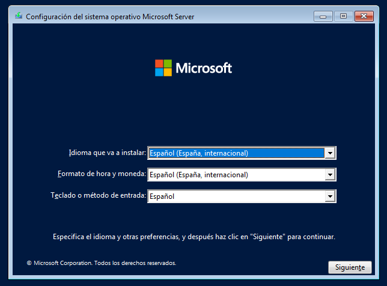
I començarem amb la instal·lació 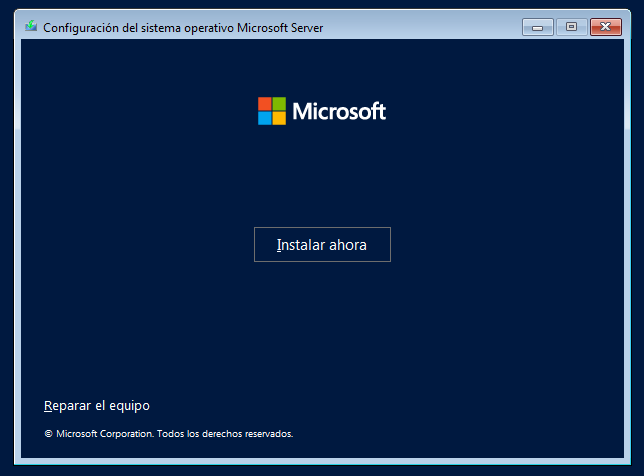
En el meu cas he triat la versió amb interfície gràfica 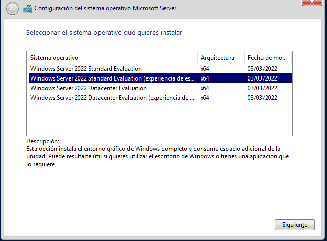
He fet les particions manualment i he creat una partició per al futur 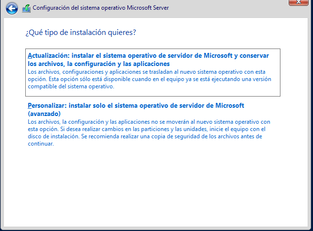
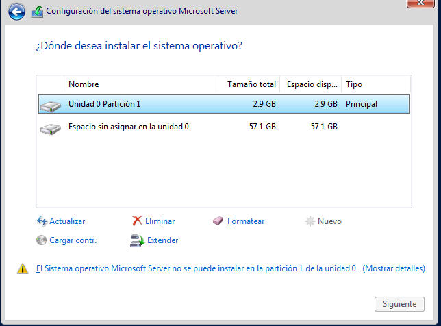
Ara toca espera asta que es completi la instal·lació 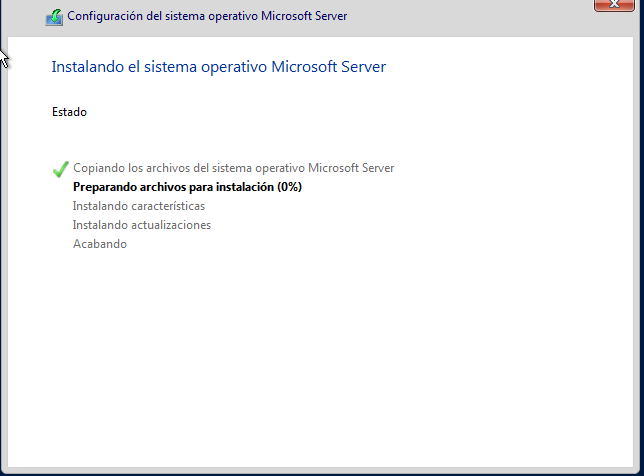
Per finalista configurarem l'usuari administrador 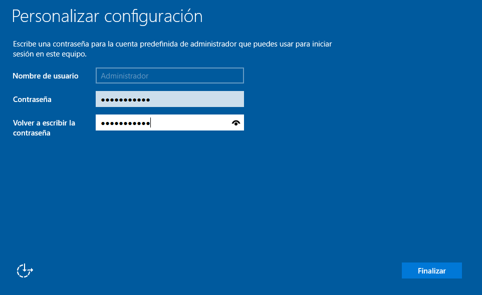
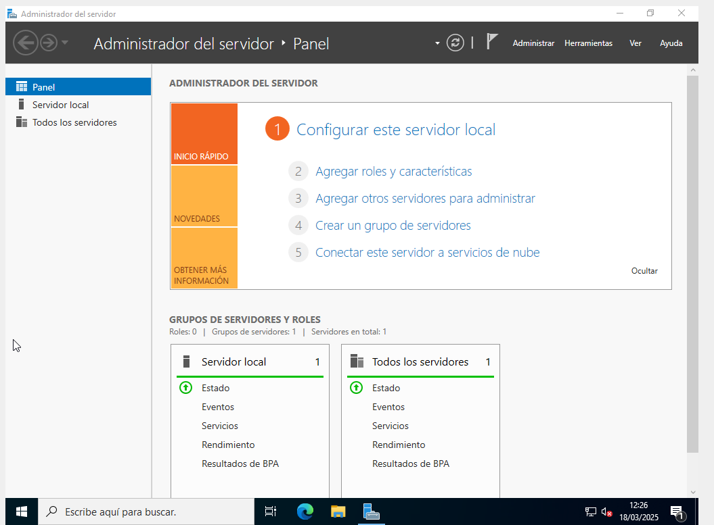
Una vegada dins posaré una IP i DNS estàtic 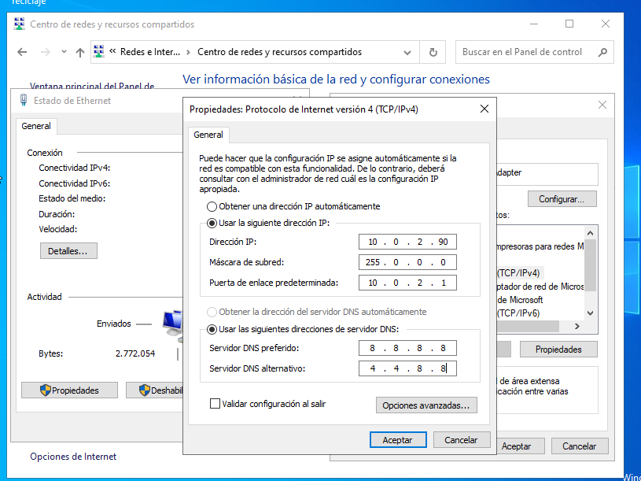
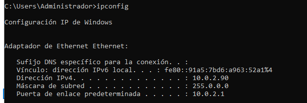
Windous 10
En el meu cas he triat la versió PRO ja que incorpora més funcionalitats 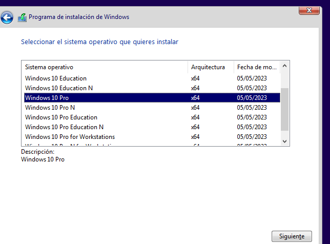
He fet les particions manualment i he creat una partició sol·licitada per la professora 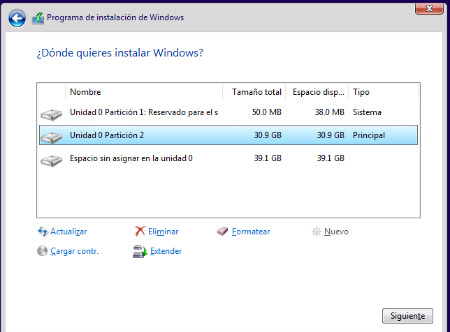
Triaríem un idioma 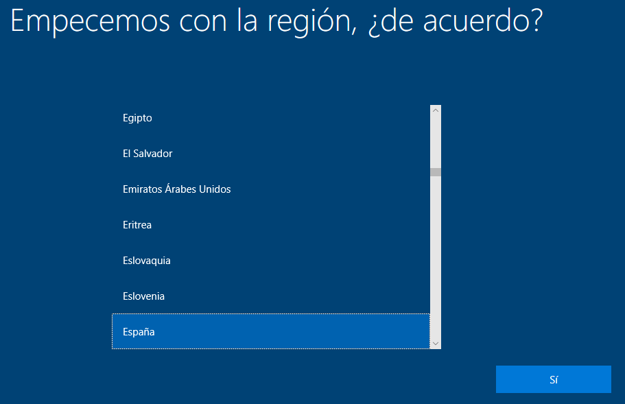
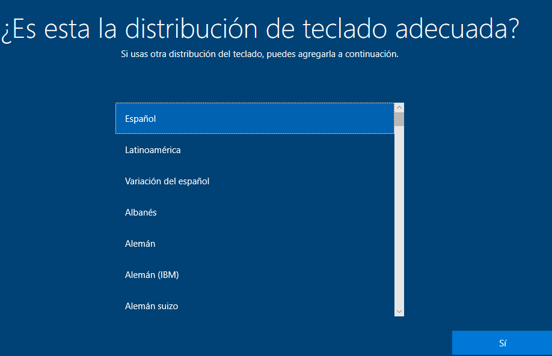
Per finalista configurarem un usuari 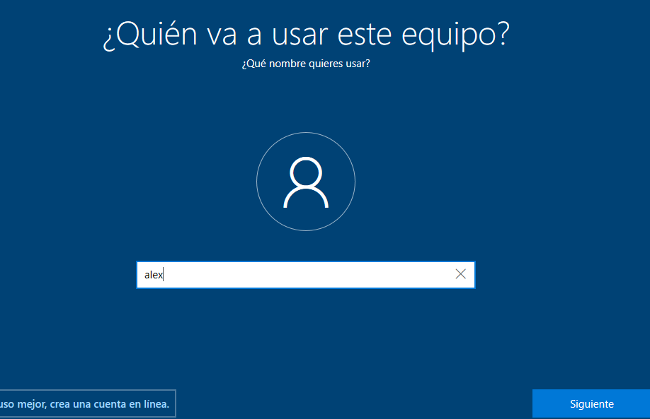
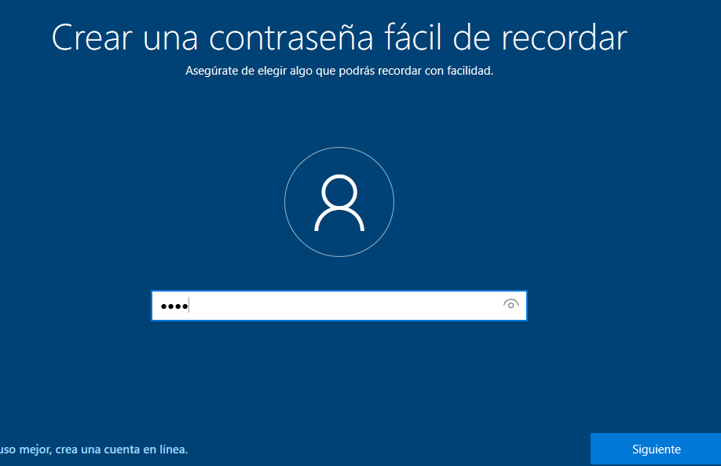
Comprovació de la partició: 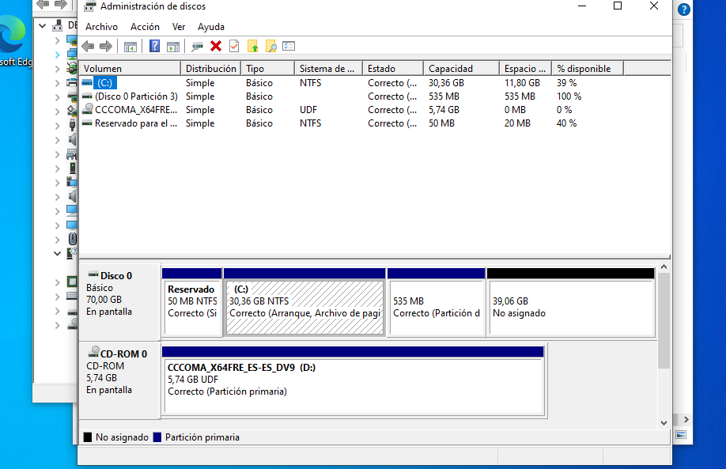

Copies de seguretat 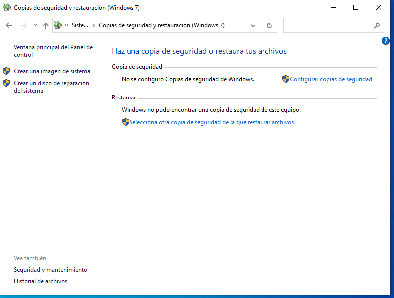
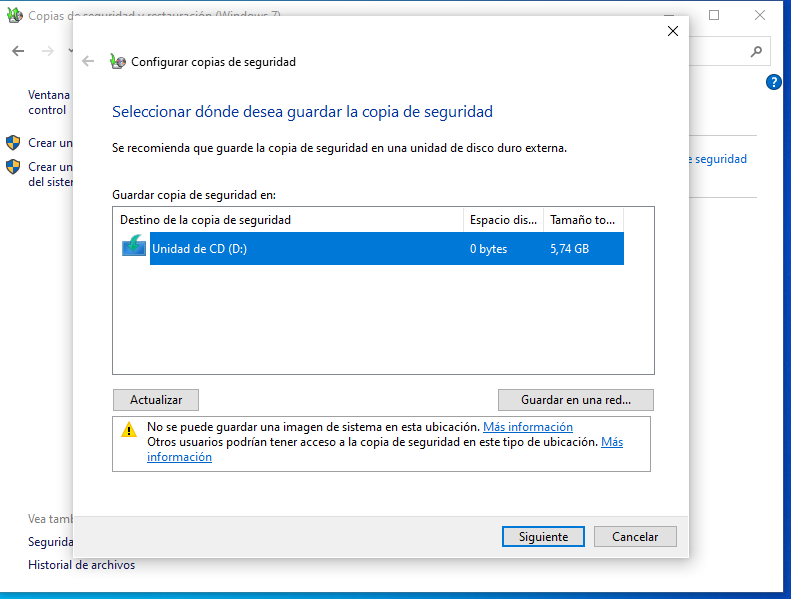
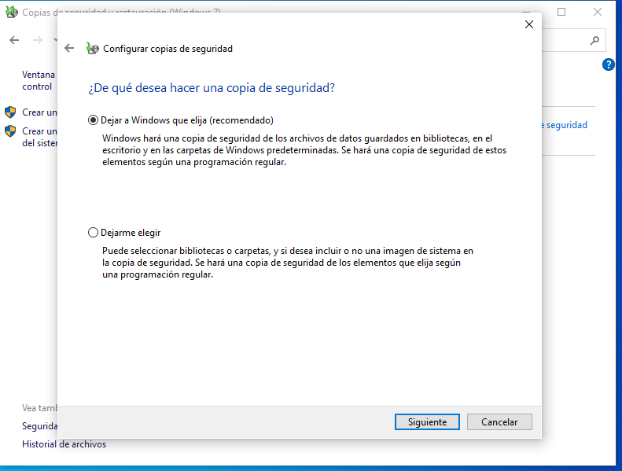
Dual Boot
GRUB 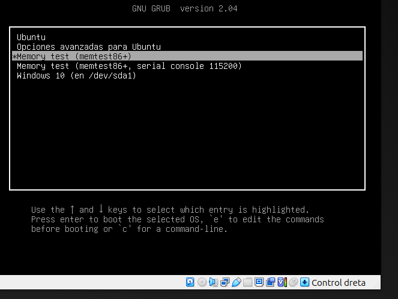